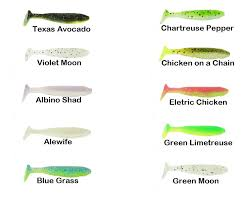
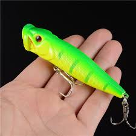

There are many different types of fishing lures that you can use. There are saltwater lures and there are freshwater lures. You can use both of them in any water that you choose, but it normally says on the package what water that it is made for or recommended for. Below you will be able to find information on the lures that I am going to introduce and what type of weather you should use them in.
Buck tail Jig- No matter where you are and what type of water you are fishing a good old buck tail jig is hard to beat.
Flutter Jigs-This lure is good at all depths. These types of lures are meant for vertical jigging meaning up and down.
Lipped Plugs-These lures swim erratically. They can be twitched to look like a wounded bait-fish or they can glide through the water.
Soft Plastics-This is the most vast variety of all lures. It has nearly endless configurations of different style baits. They can be rigged weedless or non-weedless.

Spinner-bait-These lures have a skirt of many different colors. Along with the skirt they have a metal bar that connects to a shiny spoon shaped attachment. While you retrieve the lure the metal spoon spins.
Poppers-Just as the name explains it. It is a hard plastic lure that has a bowl shape in the front of it. That is for when you twitch it, the lure makes a popping sound.
Soft Plastics-This is the most vast variety of all lures. They come in many shapes and sizes along with colors.
Spoons-This is a hard flat piece of metal. While you retrieve it the metal spins creating a shining to effect.
